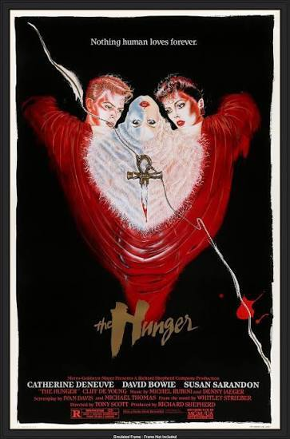
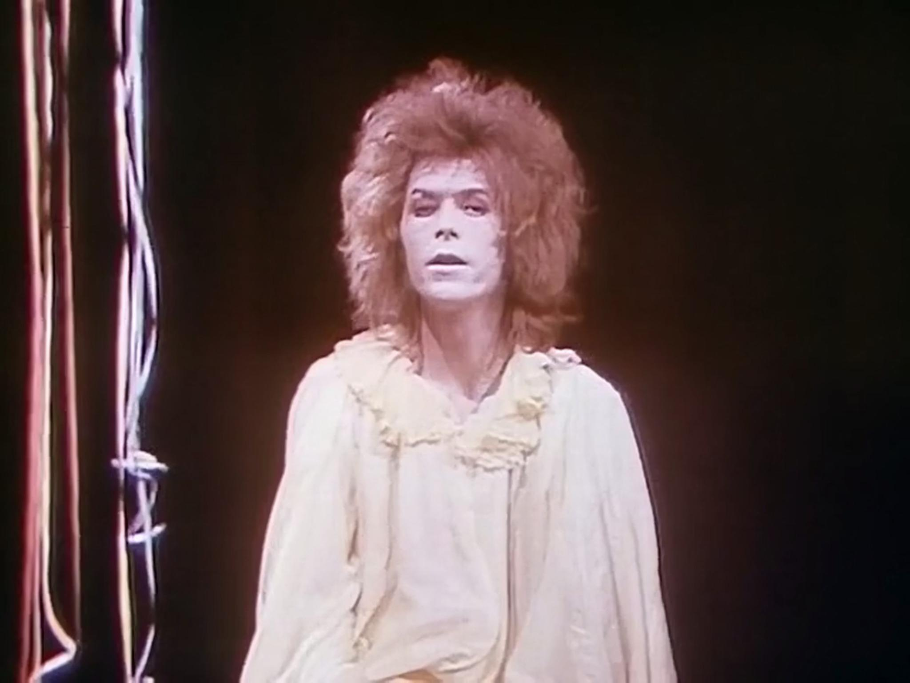
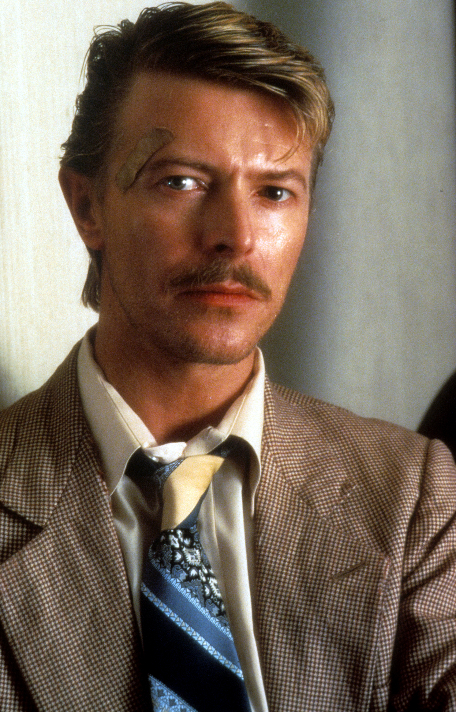
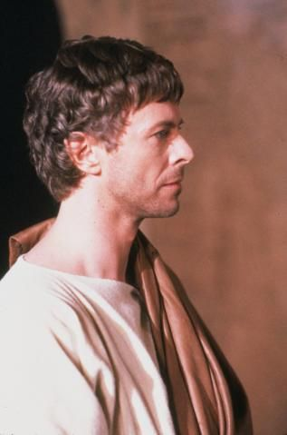
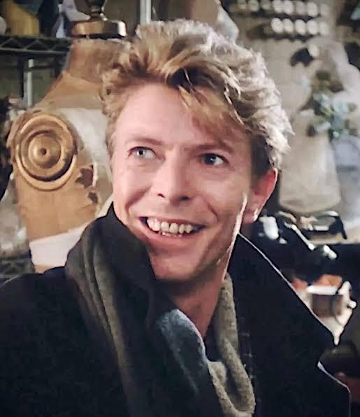
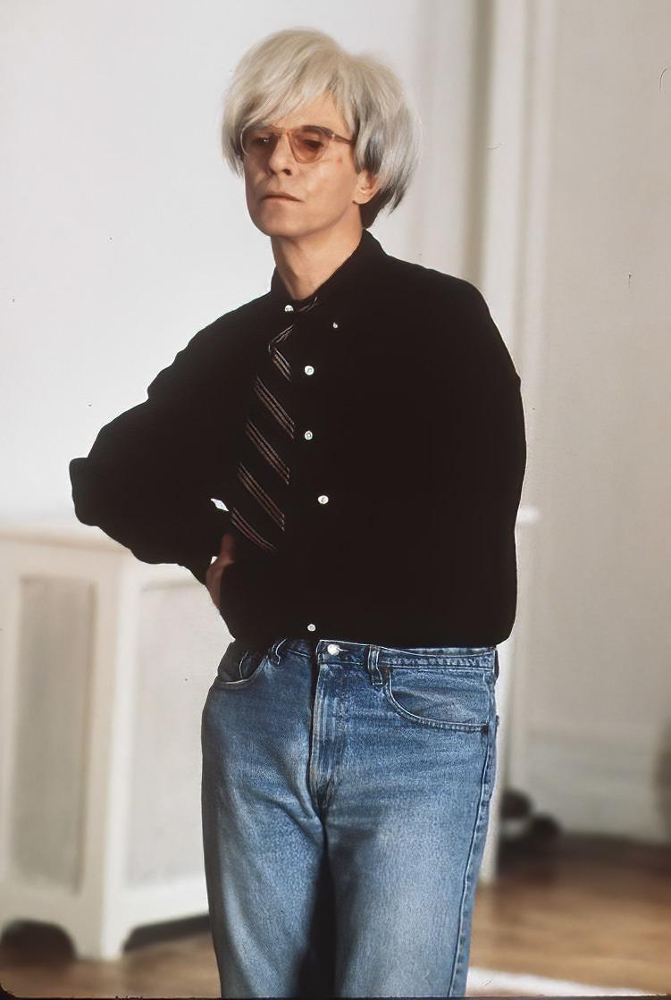
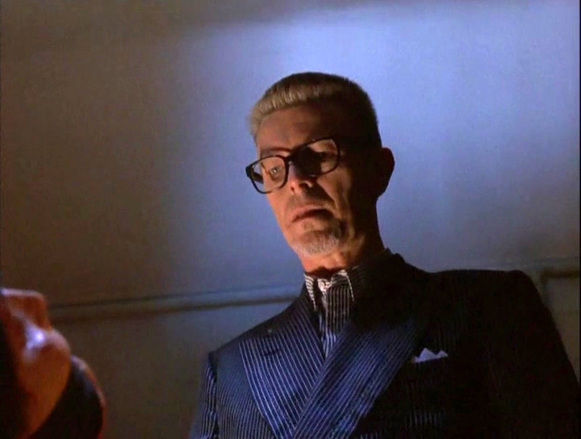

Audiovisual
Quién fue David Robert Jones y los personajes que inventó para convertirse en David Bowie. Elegí una portada para entrar.
Papeles protagónicos en el Cine




Personaje secundario
Películas en las que interpreta personajes relevantes, pero la historia no gira principalmente alrededor de él.

1970 — The Looking Glass Murders
Cloud.
Producción televisiva derivada de Pierrot in Turquoise.

1985 — Into the Night
Colin Morris.

1986 — Absolute Beginners
Vendice Partners.

1988 — The Last Temptation of Christ
Poncio Pilato.

1991 — The Linguini Incident
Monte.

1992 — Twin Peaks: Fire Walk with Me
Phillip Jeffries.
Aparición breve, pero con un personaje muy importante para el universo de David Lynch.

1996 — Basquiat
Andy Warhol.

1998 — Il Mio West (Gunslinger's Revenge)
Jack Sikora.

1999 — Everybody Loves Sunshine
Bernie.

2000 — Mr. Rice's Secret
William Rice.
Tiene un papel importante en la trama, aunque no es el único protagonista.

2006 — The Prestige
Nikola Tesla.
Un personaje secundario muy significativo.

2006 — Arthur y los Minimoys
Maltazard (voz).
Antagonista de la historia.
2008 — August
Cyrus Ogilvie.